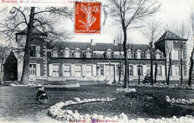

Château de Branleux
Château de Branleux
Résumé
En 1832, Pierre-Joseph Bonte-Pollet a acquis le château de Branleux à Colleret, dans l'Avesnois, un domaine qui avait été vendu comme bien national pendant la Révolution française. Cette acquisition a été réalisée lors d'une vente publique. Le château était alors un centre de vie prospère, avec des dépendances, des terres et une activité agricole gérée par des métayers. Ce château, vaste demeure de brique entourée de bois et de prairies, reflétait l'aisance d'un notable du Nord. C'est là qu'il accueillait sa famille et ses amis.
À la fin de sa vie, il se retire dans sa propriété de Branleux. C'est dans cette propriété qu'il trouva la mort en 1864, à 85 ans, « tué par un tonneau », selon la tradition orale.
Le château sera repris par la sœur de Clémence, Estelle Mariage, qui le transmettra à sa fille Adèle Goulu. Il est vendu sans doute vers 1919.
Voir https://patrimoine-avesnois.fr/chemin/colleret/
{kind=link}

{kind=link}
📷 Cliquez pour voir 2 photo(s)